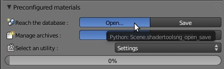
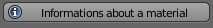
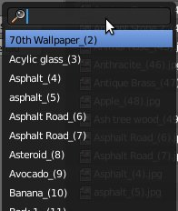
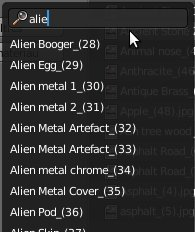
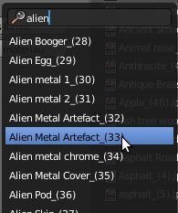
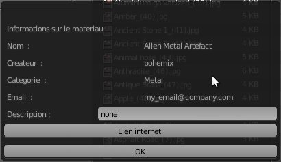
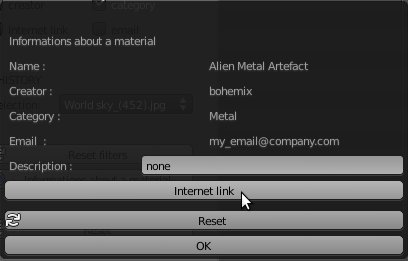
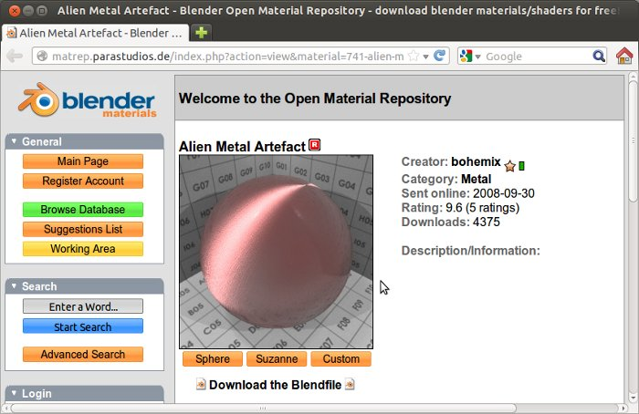

| Informations : |
| You will find this element in the menu 'Open ...'. |
|  |
| Click 'Information on the material' into left panel : |
|  |
| A search window is displayed, you can search name (or number) of material for which you need informations : |
|  |
| Put keyword(s): |
|  |
| You must select the material you need, in that list : |
|  |
| A new window appears showing you informations about the material selected : |
|  |
| You can access creator site and source files using 'Internet Link' button : |
|  |
| A web page should open (if a web address has been mentioned by author) : |
|  |